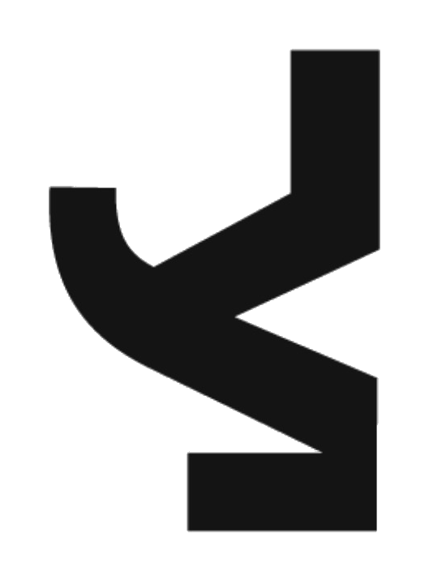

Human movement
Pose, presence and gestures can become simple environmental controls, including camera-based tracking.

SENSE / IMMERSIVEYOGAWISER / SPATIAL EXPERIENCES
Nature, beyond the screen.
Responsive environments, immersive worlds and embodied experiences. Where nature, technology and human movement meet.
EXPLORE THE WORLD'S EXPERIENTIAL REFERENCES REAL WORLD REFERENCE / TOKYO
REAL WORLD REFERENCE / TOKYOTHE IDEA / 001
We don't just look at nature.
We can move through it, hear it, and change what we see.
Immersive guided movement, breath-led atmospheres and restorative spaces for hospitality and wellbeing.
Forests, oceans, ecosystems and unseen processes made tangible for museums, science centres and education.
Spatial storytelling, responsive projection and interactive installations for buildings and public places.
Ten real projects, not conceptual renders. Explore what they built, how the space responds, and which principles could inform Yogawiser SENSE.
No matching experiences.
SENSE is Yogawiser's proposed immersive experience direction, bringing interactive technology into spaces shaped by natural systems. Starting with a small, demonstrable experience—not a claim that these reference projects are ours.
EXPLORE YOGAWISERPose, presence and gestures can become simple environmental controls, including camera-based tracking.
Realtime 3D scenes, light and projection respond to the visitor rather than playing a fixed video loop.
Projection, responsive media and audio are composed around the venue, audience and sensory goals.